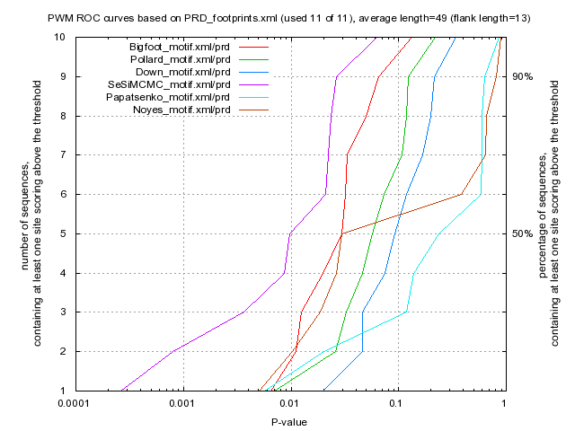

Kulakovskiy I.V., Favorov A.F., Makeev V.J. (2009) Motif discovery and motif finding from genome-mapped DNase footprint data. Bioinformatics 25(18): 2318-2325.
<up> DMMPMM motif PRD comparison [dmmpmm_compare_html]
|  |
motif alignment
motif similarity
|
Bigfoot |
Pollard |
Down |
SeSiMCMC |
Papatsenko |
Noyes |
| Bigfoot |
1.0 |
0.0414 |
0.0278 |
0.2728 |
0.0558 |
0.0309 |
| Pollard |
0.0414 |
1.0 |
0.0405 |
0.132 |
0.0993 |
0.0498 |
| Down |
0.0278 |
0.0405 |
1.0 |
0.0284 |
0.0378 |
0.0426 |
| SeSiMCMC |
0.2728 |
0.132 |
0.0284 |
1.0 |
0.0874 |
0.0291 |
| Papatsenko |
0.0558 |
0.0993 |
0.0378 |
0.0874 |
1.0 |
0.0296 |
| Noyes |
0.0309 |
0.0498 |
0.0426 |
0.0291 |
0.0296 |
1.0 |
|